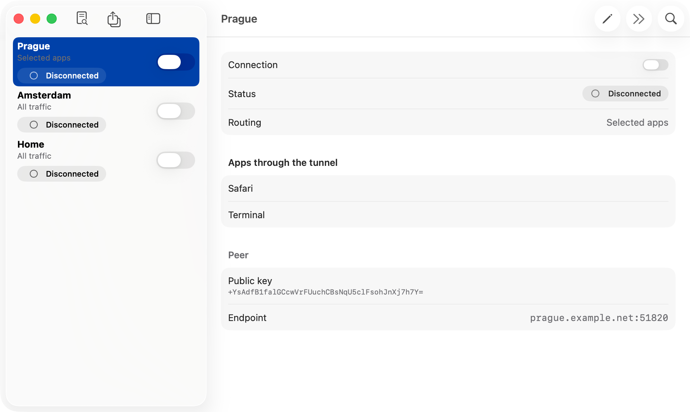
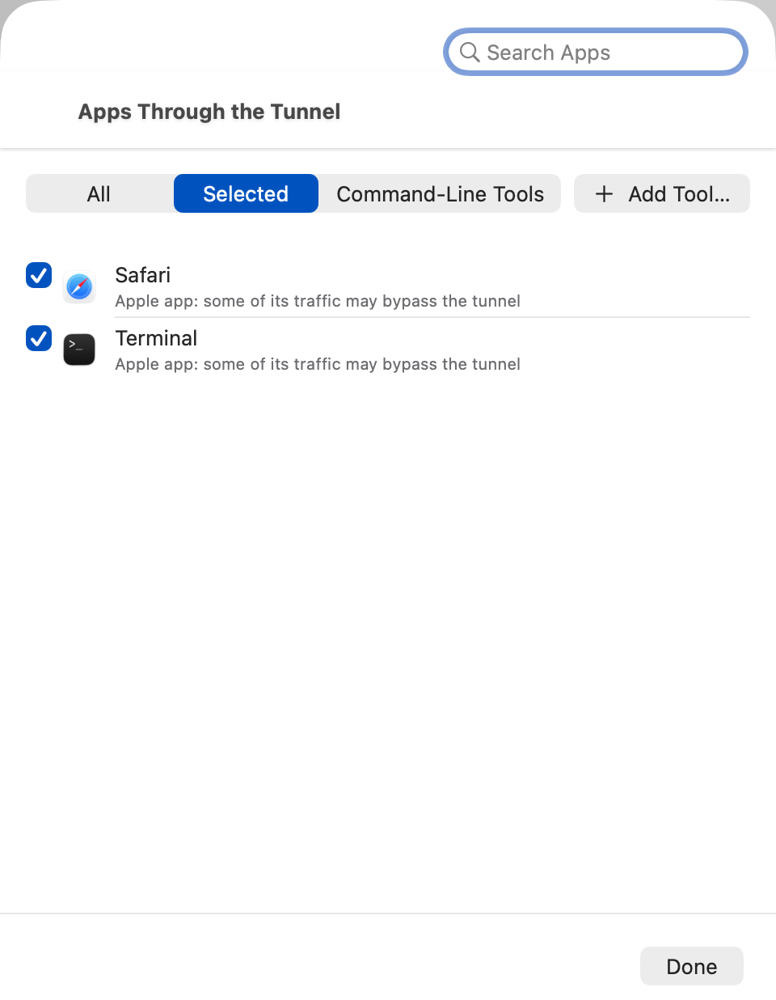

Choose apps, not subnets
Pick apps and command-line tools. Their helpers and the processes they start go along: commands in a selected Terminal use the tunnel too.
Free and open source · macOS 26 and later
Splitway is a WireGuard® client for Mac. Bring your own configuration, choose which apps go through the tunnel, and everything else stays on your regular connection.
Signed with Developer ID and notarized by Apple · Apple silicon and Intel · All versions

The official WireGuard client sends whole subnets through the tunnel. Splitway lets you pick apps instead, and keeps the rest of your Mac on the regular connection.
Pick apps and command-line tools. Their helpers and the processes they start go along: commands in a selected Terminal use the tunnel too.
Name lookups of selected apps go through the tunnel as well, so they do not leak and locations match the VPN.
If the tunnel drops, selected apps wait for it instead of going direct. You can let them go direct instead, per tunnel.
Import a .conf or .zip, paste from the clipboard or create a tunnel with fresh keys. No accounts and no analytics; keys stay in the Keychain.
Switch tunnels from the menu bar, start Splitway at login, or ask Shortcuts and Siri to connect.
The whole app is on GitHub under GPL-3.0: read the code, build it yourself or help improve it.
Splitway uses only public macOS APIs. The routing happens on your Mac, and nothing about your connections is stored or sent anywhere.
Splitway installs a network system extension with a transparent proxy. macOS tells it which app opened every TCP or UDP connection.
Connections of the apps you chose go through WireGuard inside the extension. Everything else goes back to macOS and leaves directly.
A tunnel can also carry all traffic, like the official client, with an option to keep local networks out.

You need a WireGuard server: your own, on a router, or from a VPN provider that gives out WireGuard configurations.
Get the latest Splitway.dmg.
Open the image and drag Splitway to Applications. The network extension starts only from there.
On first launch, turn Splitway on in System Settings › General › Login Items & Extensions › Network Extensions. The app guides you.
Add your configuration, allow the VPN configuration when macOS asks, choose the apps and turn the tunnel on.
No. It is a client that connects to the WireGuard server you or your provider run. There are no Splitway servers, accounts or subscriptions.
No. There are no analytics, ads or tracking, and the app never contacts the developer. See the privacy policy.
Any app or command-line tool, including Safari and apps built on WebKit or Electron. Processes that a selected app starts go through the tunnel with it. Some system services that work on behalf of Apple apps may still go direct, and the app says so next to them.
The App Store accepts VPN apps only from companies, and Splitway is an independent open-source project. Instead, every release is signed with Developer ID and notarized by Apple, so macOS opens it without warnings.
No. iOS does not tell a tunnel which app sent a packet, and iPhone apps can reach people only through the App Store.
Download the new version and replace Splitway in Applications. The network extension updates itself the next time the app starts.
Choose Uninstall Splitway… in Settings. It removes the tunnels with their keys, the VPN configurations, the app's data and the network extension. Moving the app to the Trash leaves all of that in place.